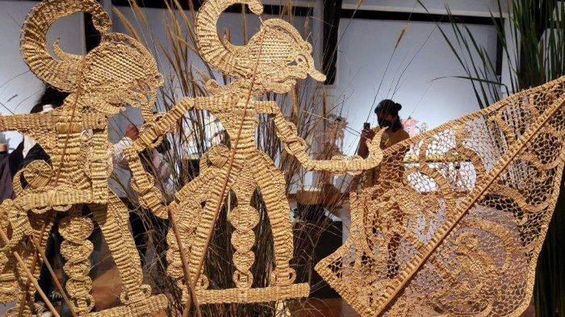
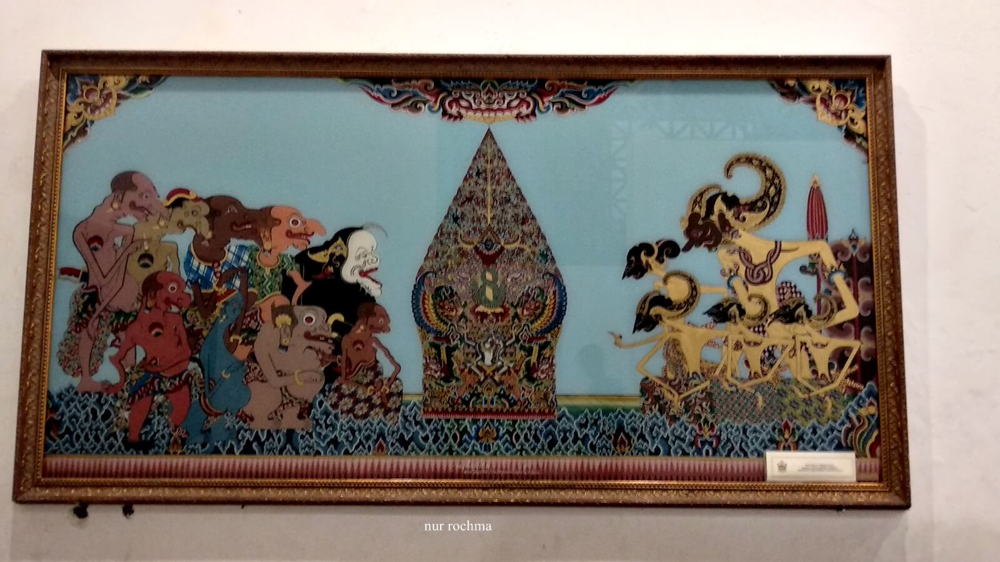
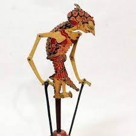
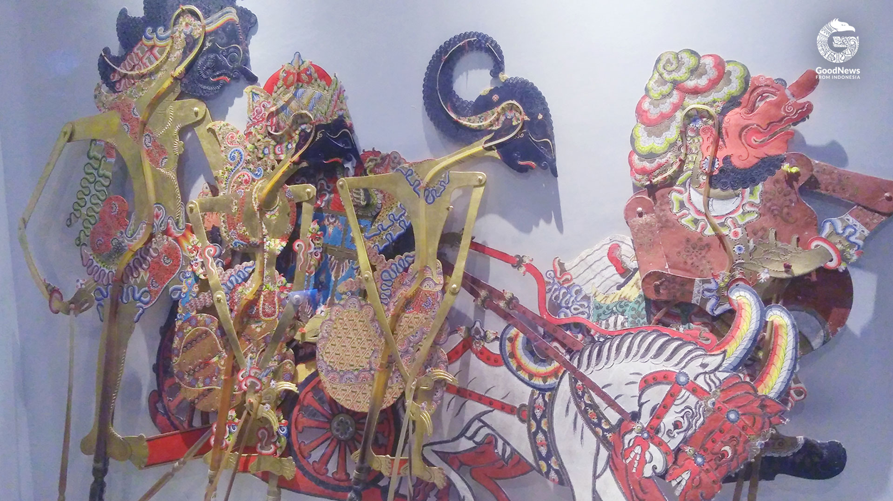

Museum WAYANG Jakarta
Profil Museum WAYANG
Museum WAYANG Jakarta adalah museum yang memiliki berbagai macam jenis wayang baik jenis wayang indonesia dan berbagai
macam koleksi wayang, boneka dari manca negara. Jika anda berkunjung ke museum ini anda akan mengenal dan melihat koleksi
wayang kulit, wayang golek, koleksi wayang dan boneka dari negara negara tetangga seperti seperti Malaysia, Thailand,
Suriname, Cina, Vietnam, Perancis, India dan Kamboja, termasuk juga koleksi set gamelan dan juga lukisan wayang. Selain
koleksi tentang perwayangan di dalam museum ini anda juga bisa melihat lihat koleksi piring sebagai tanda batu nisan Jan
Pieterszoon Coen. dan juga sebuah teater wayang serta workshop tentang pembuatan wayangsecara berkala juga diselenggarakan
di Museum ini.Museum Wayang Jakarta salah satu museum yang didedikasikan untuk orang jawa tentang dunia perwayangan.
Sejarah Museum WAYANG
pada awalnya bangunan yang digunakan oleh museum ini bernama De Oude Hollandsche Kerk atau Gereja Lama Belanda dan konon
ceritanaya gereja tersebut dibangun pertamakali pada tahun 1640.Kemudian pada Tahun 1732 sempat diperbaiki dan bergantilah
namanya menjadi De Nieuwe Hollandse Kerk atau Gereja Baru Belanda, Bangunan ini bertahan hingga tahun 1808 kemudian hancur
akibat gempa bumi yang terjadi pada tahun yang sama.Nah di lokasi bekas reruntuhan itulah dibangun sebuah gedung yang kini
disebut sebagai gedung museum wayang dan kemudian diresmikan pemakaiannya dan peruntukkannya sebagai museum pada tanggal
13 Agustus 1975.
Koleksi Museum WAYANG
Hingga kini Museum Wayang mengoleksi lebih dari 4.000 buah wayang.Terdiri dari wayang golek, wayang kardus, wayang rumput,
wayang kulit, wayang janur, topeng, boneka, wayang beber, dan gamelan.Pada umumnya boneka yang dikoleksi di museum ini adalah
boneka-boneka yang berasal dari Eropa.Meskipun ada juga yang berasal dari beberapa negara non-Eropa seperti Thailand,
Suriname, Tiongkok, Vietnam, India, Cina, Malaysia dan Kolombia.
Adapun daftar jenis wayang di Meseum Wayang, antara lain:

Wayang Golek

Wayang Anyaman Bambu

Wayang Beber

Wayang Klitik

Wayang Kulit